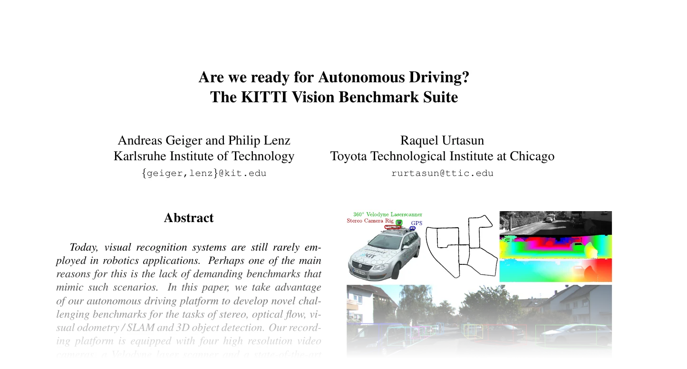

KITTI
KITTI 3D object detection dataset with calibration loading and coordinate-frame conversion helpers.

Classes:
-
KittiCalib–KITTI camera/LiDAR calibration
-
KITTI–KITTI 3D object-detection dataset (LiDAR points + raw LiDAR-frame ground-truth boxes).
Functions:
-
load_kitti_calib–Parse a KITTI
calib/{id}.txtinto its projection / rectification / LiDAR-to-camera matrices. -
lidar_to_rect–Transform LiDAR points into the rectified camera frame.
-
rect_to_img–Project rectified-camera points onto the
P2image plane. -
rect_to_lidar–Transform rectified-camera points back into the LiDAR frame (inverse of
lidar_to_rect). -
fov_flag–Boolean mask of LiDAR points that project into the front-camera image.
-
load_kitti_boxes–Parse
label_2/{id}.txtinto raw LiDAR 7-DoF boxes and their per-box attributes.
KITTI(
root: PathLike,
*,
train: bool = True,
split_file: Optional[PathLike] = None,
fov: bool = True,
return_calib: bool = False,
transform: Optional[
Callable[[Dict[str, Any]], Dict[str, Any]]
] = None,
download: bool = False,
force_download: bool = False,
force_process: bool = False,
show_progress: bool = True,
num_workers: Optional[int] = None,
)
Bases: PointCloudDataset
KITTI 3D object-detection dataset (LiDAR points + raw LiDAR-frame ground-truth boxes).
The raw object split is read from <root>/KITTI/raw/<split>/ and processed once into a per-frame
.npy cache (<root>/KITTI/processed_fov/<split>/ when fov=True, else <root>/KITTI/processed/),
so each __getitem__ is a flat array read. The whole split is processed; split_file only selects
which cached frames to load. Frames are loaded lazily from the cache, so a full split does not need to
fit in host memory.
KITTI requires manual download (a license must be accepted), so download=True raises with the
download URL rather than fetching anything.
Parameters:
-
root(PathLike) –Dataset root; raw data is read from
<root>/KITTI/raw/<split>/. -
train(bool, default:True) –If
True, reads thetrainingsplit directory, otherwisetesting. -
split_file(Optional[PathLike], default:None) –Optional text file of frame ids (one per line) selecting which cached frames to load; defaults to every processed frame.
-
fov(bool, default:True) –Restrict points to the front-camera field of view (requires
image_2/). Baked into the cache. -
return_calib(bool, default:False) –Also emit the
calib(the composed \((3, 4)\) LiDAR-to-image matrix \(P_2 [R_0 T_\text{velo}]\) with the perspective-divide row from \(R_0 T_\text{velo}\), theprojected_ignore_maskcontract) andimage_shape(image(height, width)) keys, read lazily at access time from the rawcalib/txt and theimage_2/PNG header (both must be present in the raw split). -
transform(Optional[Callable[[Dict[str, Any]], Dict[str, Any]]], default:None) –Callable applied to each sample dict (e.g.
RelabelBoxes+ the model's transform). -
download(bool, default:False) –Unsupported; raises a
RuntimeErrorpointing at the manual download page when set. -
force_download(bool, default:False) –Unsupported; raises like
download. -
force_process(bool, default:False) –Reprocess the raw split even if a cache already exists.
-
show_progress(bool, default:True) –Show a progress bar while processing.
-
num_workers(Optional[int], default:None) –Worker processes for processing, or
Nonefor sequential processing.
Example
Assuming the raw split is extracted under data/KITTI/raw/training/:
Methods:
-
download–KITTI must be downloaded manually after accepting its license.
-
process–Convert every raw frame in the split into its
.npycache directory. -
process_frame–Read one raw frame (optionally FOV-filtered) and write its
.npycache. -
load–Enumerate the cached frames to load, honoring
split_filewhen given.
Attributes:
-
processed_dir(str) –Path to the processed cache directory, suffixed
_fovwhen the clouds are cropped to the camera view. -
raw_split_dir(Path) –Path to the split's raw directory.
-
processed_split_dir(Path) –Path to the split's processed cache directory.
-
frame_ids(List[str]) –Frame ids of the loaded samples, in dataset order.
-
name(str) –Name of the dataset directory.
-
data_dir(str) –Path to the dataset directory
<root>/<name>. -
raw_dir(str) –Path to the raw download directory.
property
¶
Path to the processed cache directory, suffixed _fov when the clouds are cropped to the camera view.
property
¶
Path to the split's processed cache directory.
KITTI must be downloaded manually after accepting its license.
Parameters:
-
force(bool, default:False) –Unused; present to mirror the other datasets'
downloadsignature.
Raises: RuntimeError: Always; automatic download is not supported.
process(
force: bool = False,
num_workers: Optional[int] = None,
show_progress: bool = True,
) -> None
Convert every raw frame in the split into its .npy cache directory.
Parameters:
-
force(bool, default:False) –Reprocess even if a cache already exists.
-
num_workers(Optional[int], default:None) –Worker processes, or
Nonefor sequential processing. -
show_progress(bool, default:True) –Show a progress bar while processing.
load_kitti_calib(calib_file: PathLike) -> KittiCalib
Parse a KITTI calib/{id}.txt into its projection / rectification / LiDAR-to-camera matrices.
Only the three matrices used for box conversion and the FOV filter are kept: the left-color camera
projection P2 \((3, 4)\), the rectifying rotation R0_rect \((3, 3)\), and the LiDAR-to-camera transform
Tr_velo_to_cam \((3, 4)\).
Parameters:
-
calib_file(PathLike) –Path to a KITTI calibration text file.
Returns:
-
KittiCalib–A
KittiCalibdict holding theP2,R0_rect, andTr_velo_to_camarrays.
lidar_to_rect(
points: ndarray, calib: KittiCalib
) -> ndarray
Transform LiDAR points into the rectified camera frame.
Parameters:
-
points(ndarray) –LiDAR XYZ coordinates.
-
calib(KittiCalib) –Calibration matrices from
load_kitti_calib.
Returns:
-
ndarray–The points expressed in the rectified camera frame.
Shape
- Input
points: \((N, 3)\). - Output: \((N, 3)\).
rect_to_img(
points: ndarray, calib: KittiCalib
) -> Tuple[ndarray, ndarray]
Project rectified-camera points onto the P2 image plane.
Parameters:
-
points(ndarray) –Points in the rectified camera frame.
-
calib(KittiCalib) –Calibration matrices from
load_kitti_calib.
Returns:
-
Tuple[ndarray, ndarray]–A pair
(pixels, depth)of the projected image coordinates and the per-point camera depth.
Shape
- Input
points: \((N, 3)\). - Output
pixels: \((N, 2)\),depth: \((N,)\).
rect_to_lidar(
points: ndarray, calib: KittiCalib
) -> ndarray
Transform rectified-camera points back into the LiDAR frame (inverse of lidar_to_rect).
Parameters:
-
points(ndarray) –Points in the rectified camera frame (e.g. label box centers).
-
calib(KittiCalib) –Calibration matrices from
load_kitti_calib.
Returns:
-
ndarray–The points expressed in the LiDAR frame.
Shape
- Input
points: \((N, 3)\). - Output: \((N, 3)\).
fov_flag(
points: ndarray,
image_shape: Tuple[int, int],
calib: KittiCalib,
) -> ndarray
Boolean mask of LiDAR points that project into the front-camera image.
A point is kept when its P2 projection falls inside the image bounds and it lies in front of the
camera (positive depth).
Parameters:
-
points(ndarray) –LiDAR points; only the first three columns (XYZ) are used.
-
image_shape(Tuple[int, int]) –Front-camera image
(height, width)in pixels. -
calib(KittiCalib) –Calibration matrices from
load_kitti_calib.
Returns:
-
ndarray–A boolean mask selecting the in-FOV points.
Shape
- Input
points: \((N, C)\) with \(C \ge 3\). - Output: \((N,)\).
load_kitti_boxes(
label_file: PathLike, calib: KittiCalib
) -> Dict[str, ndarray]
Parse label_2/{id}.txt into raw LiDAR 7-DoF boxes and their per-box attributes.
Each non-DontCare row is converted from its camera-frame (h, w, l, x, y, z, ry) annotation to a
LiDAR box \((cx, cy, cz, dx, dy, dz, \text{heading})\) via rect_to_lidar; classes without a 3D box are
skipped. The 2D box height is bbox_bottom - bbox_top in pixels.
Parameters:
-
label_file(PathLike) –Path to a KITTI
label_2file. A missing file yields empty arrays (e.g. test split). -
calib(KittiCalib) –Calibration matrices from
load_kitti_calib, used to convert box centers to the LiDAR frame.
Returns:
-
Dict[str, ndarray]–A dict of arrays keyed by cache file name:
boxes\((K, 7)\),labels\((K,)\),truncation\((K,)\), -
Dict[str, ndarray]–occlusion\((K,)\), andbbox_height\((K,)\).